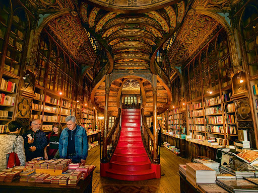

-
Portugal is considered to be one of the most unique places to visit because of not only the culture but the most infamous sites you can witness yourself that no other person could ever witness. Lies in the southwest corner of Europe lies Portugal, one fifth of the Iberian Peninsula it shares with Spain. Portugal is also known for it's own language which is called Portuguese. When it comes to food, portuguese people like to eat bread, rice, spices, pastries, sausages, seafood, etc. Portugal is also the home to the wine region called Douro Valley. This is where Port wine grapes are grown along the Douro river in terraces cascading down the steep slopes. Port is Portugal’s most famous wine. Lisbon is such a very beautiful place to visit in Portugal as it is the capital and where a lot of famous places you can visit. Portugal is considered to be one of the most oldest nations in Europe. A fun fact to add is that Lisbon was almost destroyed by an earthquake, followed by a tsunami 40 minutes later. Livraria Lello is the bookstore in Porto where it was isnpired by J.K. Rowling to write Harry Potter books. Portugal is considered to be a very safe place to visit but there are sometimes pickpocketing that you might need to be aware of in order to be safe.
Learn more at: https://portugal.com/portugal
Also learn more facts at: https://artsandculture.google.com/theme/8-fun-facts-you-never-knew-about-portugal/xwICH2cMcrGWKg
-

Inside the Livraria Lello!
- "The history of Portugal can be traced from circa 400,000 years ago, when the region of present-day Portugal was inhabited by Homo heidelbergensis. The oldest human fossil is the skull discovered in the Cave of Aroeira in Almonda. Later Neanderthals roamed the northern Iberian peninsula. Homo sapiens arrived in Portugal around 35,000 years ago. Pre-Celtic tribes such as Lusitanians, Turduli and Oestriminis lived in the centre and north. In the south the Cynetes lived in the Algarve and Lower Alentejo regions before the 6th century BC, developed the city of Tartessos and the written Tartessian language, and left many stelae in the south of the country. Early in the first millennium BC, waves of Celts from Central Europe invaded and intermarried with the local populations to form several ethnic groups and many tribes. Their presence is traceable, in broad outline, through archaeological and linguistic evidence. They dominated the northern and central area, while the south retained much of its Tartessian character, combined with the Celtici until the Roman conquest. Some small, semi-permanent trading settlements were founded by Phoenician-Carthaginians on the southern coast of the Algarve. The Roman invasion in the 3rd century BC lasted several centuries, and developed the Roman provinces of Lusitania in the south and Gallaecia in the north. Numerous Roman sites include works of engineering, baths, temples, bridges, roads, circuses, theatres, layman's homes, coins, sarcophagi, and ceramics..."
-
Learn more history of Portugal at: https://en.wikipedia.org/wiki/History_of_Portugal
Portugal